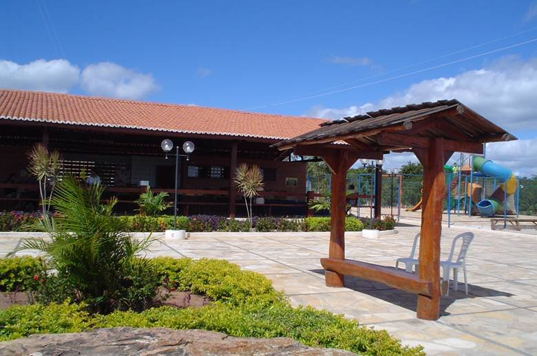

Informações técnicas sobre relevo, população, IDH etc.
| INFORMAÇÕES | |
|---|---|
| Municípios limítrofes | Norte: Saboeiro, Leste: Tarrafas, Sul: Assaré e Campos Sales, Oeste: Aiuaba |
| Fundação | 1958 |
| População total | pop_total |
| Clima | Tropical quente semi-árido |
| IDH | 0,613 — médio |
| PIB | R$ 3 419,60 |
| INFORMAÇÕES TERRITÓRIAIS | |
|---|---|
| Número de habitantes | 7 353 habitantes |
| Superfície de Antonina do Norte |
26 010 hectares
260,10 km² (100,43 sq mi) |
| Densidade populacional | 28,3 ha./km² |
| Altitude de Antonina do Norte | 364 metros de altitude |
| Coordenadas geográficas decimais |
Latitude:
-6.77152
Longitude: -39.9862 |
| Coordenadas geográficas sexagesimais | Latitude: 6° 46' 17'' Sul , Longitude: 39° 59' 10'' Oeste |
| INFORMAÇÕES DO MUNICÍPIO | |
|---|---|
| Endereço da Prefeitura Municipal de Antonina do Norte |
Antonina do Norte
Prefeitura de Antonina do Norte
Rua João Batista Arrais, 8 ANTONINA DO NORTE - CE, 63570-000 Brasil Work +55 88 3525-1112 Fax +55 88 3525-1212 |
| Telefone da prefeitura |
(88) 3525-1112
Internacional: +55 88 3525-1112 |
| Fax |
(88) 3525-1212
Internacional: +55 88 3525-1212 |
| Endereço electrónicoda prefeitura |
A carregar...
|
| Site oficial do município | antoninadonorte.ce.gov.br |
| INFORMAÇÕES DO ADMINISTRATIVAS | ||
|---|---|---|
| Prefeito de Antonina do Norte | ANTONIO ROSENO FILHO | |
| Partido politico | PDT | |
| INFORMAÇÕES DE TRANSPORTE | |
|---|---|
| Aeroporto |
Aeroporto Regional do Cariri
93.5 km
Aeroporto de Picos
173.1 km
Aeroporto de Petrolina
295.5 km
|
| INFORMAÇÕES DE DISTÂNCIA A OUTRAS CIDADES | ||
|---|---|---|
| São Paulo : 1999 km | Rio de Janeiro : 1829 km | Brasília : 1325 km |
| Salvador : 709 km | Fortaleza : 376 km mais perto | Belo Horizonte : 1514 km |
| Manaus : 2259 km | Curitiba : 2300 km | Recife : 581 km |
| Goiânia : 1495 km | Belém : 1115 km | Porto Alegre : 2844 km |
| Guarulhos : 1977 km | Campinas : 1950 km | São Luís : 673 km |
| Distância calculada em linha reta! | ||
Conheça mais sobre a história da Antonina do Norte.
0 Município de Antonina do Norte, denominou-se anteriormente Mocambo. Foi criado em 08 de maio de 1958, e possui as características do Planalto de Inhamuns. Religiosamente depende da Paróquia de Saboeiro. Gentílico: antonino ou antoninense
Formação Administrativa Distrito criado com a denominação de Mocambo, pelas lei municipal nº 3338, de 1509-1956, subordinado ao município de Aiuaba. Elevado à categoria de município com a denominação de Antonina do Norte , pela estadual de 4077, de 08-05-1958, desmembrado de Aiuaba. Sede no atual distrito de Antonina do Norte ex-Mocambo. Constituído do distrito sede. Instalado em 25-03-1959 Em divisão territorial datada de 1-VII-1960, o município constituído do distrito sede. Assim permanecendo em divisão territorial datada 31-XII-1963. Pela lei estadual nº 7151, de 14-01-1964, é criado o distrito de Taboleiro e anexado ao município de Antonina do Norte. Pela lei estadual nº 7151, de 14-01-1968, o município é constituído de 2 distritos: Antonina do Norte e Taboleiro. Assim permanecendo em divisão territorial datada de 2005. Alteração toponímica distrital Mocambo para Antonina do Norte alterado, pela lei estadual nº 4077, de 08-05-1958.
Fonte: https://cidades.ibge.gov.br/brasil/ce/antonina-do-norte/historico
Saiba mais sobre os melhores lugares e o que fazer em Antonina do Norte.
A Casa Grande é exemplo de um trabalho incrível idealizado por seus fundadores. Os objetos de outra época catalogados e perfeitamente conservados é uma viagem no tempo. Os projetos educacionais e culturais de base é estimulo e manifestação do bem materializado.
Memorial Patativa Do Assaré
Restaurante Pontal de Santa Cruz
Veja como chegar nos melhores pontos de Antonina do Norte.